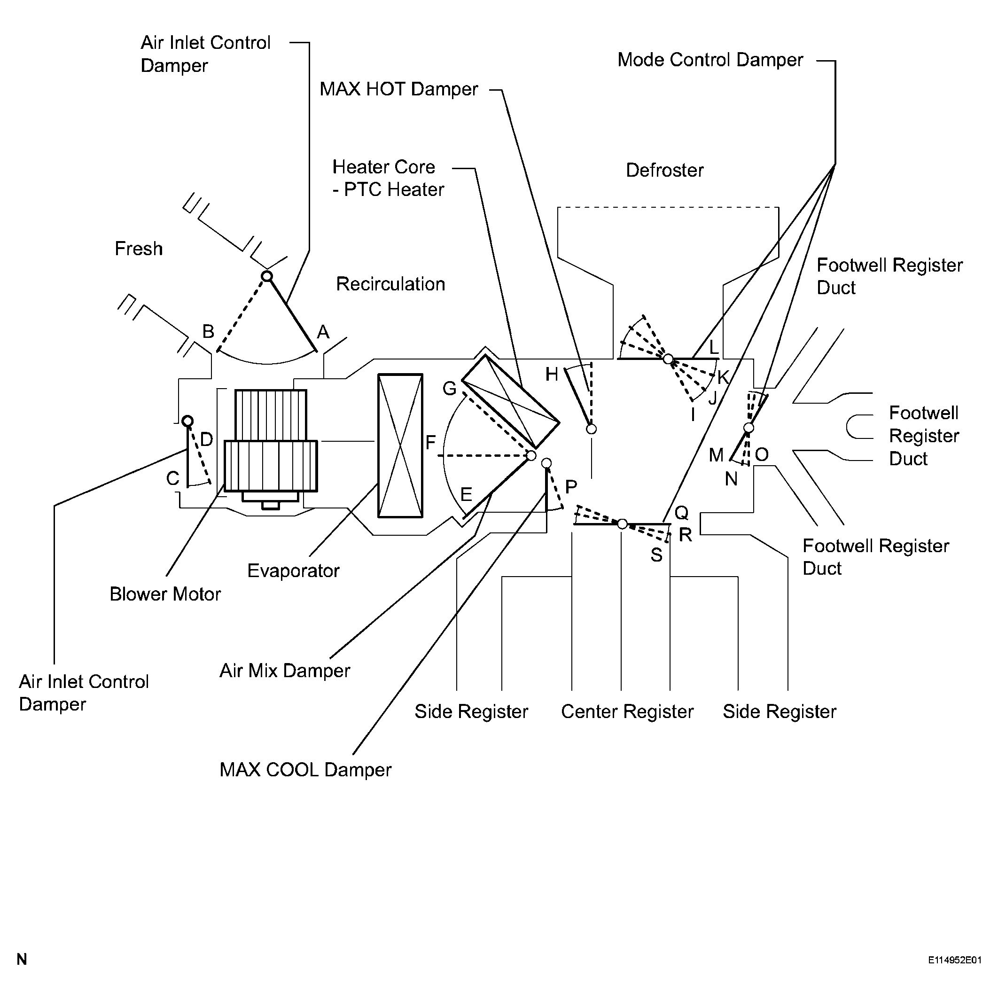
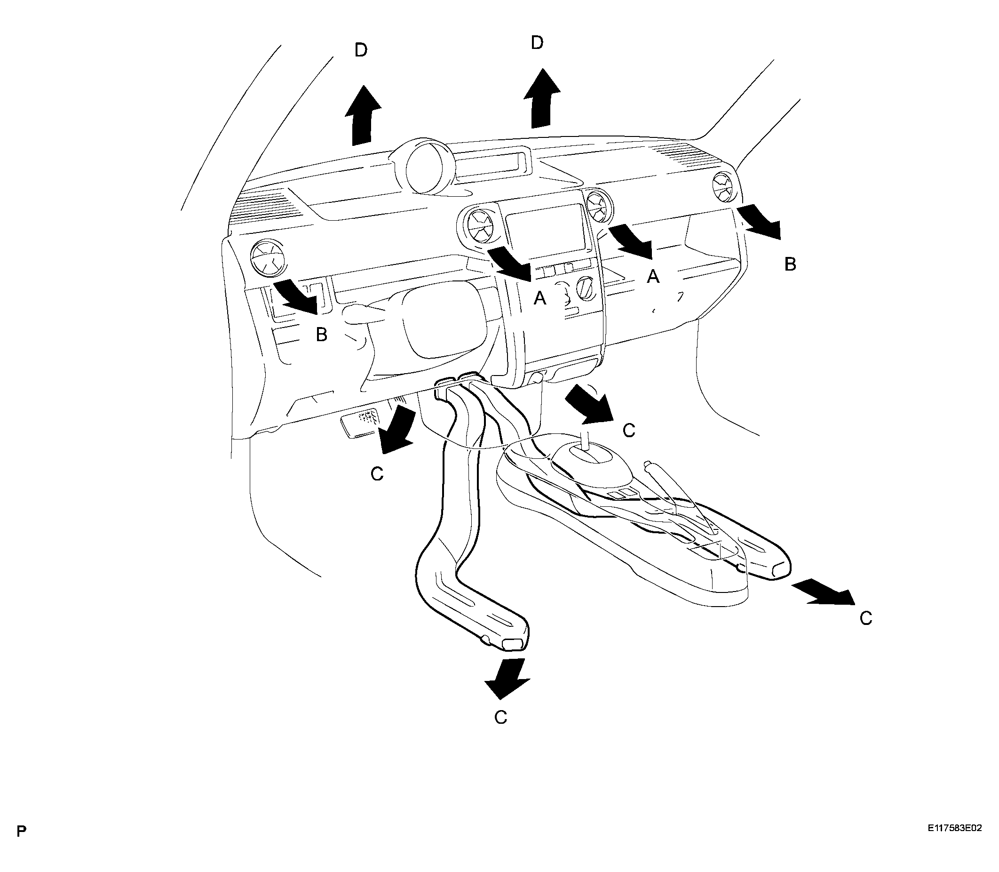
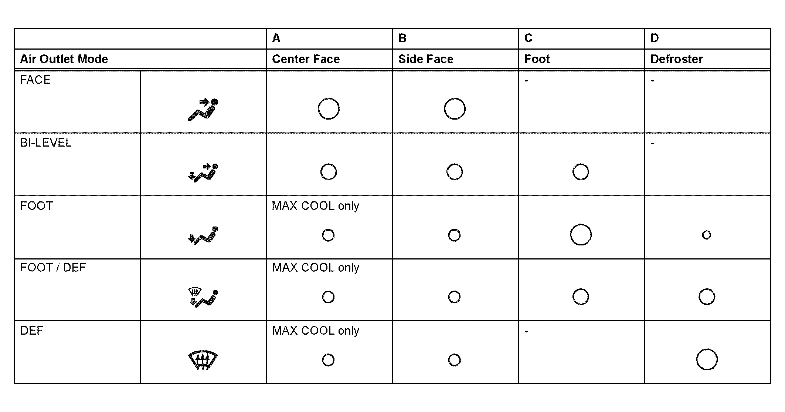

System Description
- GENERAL
- Air Conditioning Unit
- The evaporator body has been coated with a type of resin that contains an antibacterial agent in order to minimize foul odor and the propagation of bacteria.
- An MS (Multi-tank, Super-slim) structure evaporator consists of the top and bottom tanks and inner fin.
- A compact, lightweight, and highly efficient straight flow (full-path flow) aluminum heater core is used.
- A 2-way flow type air conditioning unit changes the 2-way flow operation if specified conditions are met. Under 2-way flow operation, the system introduces external air and internal air simultaneously as follows: 1) warm internal air is discharged to the foot area; and 2) fresh, dry, external air is discharged to the upper area. Thus, it realizes both excellent heating performance and demisting performance.
- The PTC (Positive Temperature Coefficient) heater contains electrodes that are interposed with a PTC element, to which current is applied in order to warm the air that passes through the fin.
- Other Equipment
- The compressor is a continuously variable capacity type in which its capacity varies in accordance with the cooling load of the air conditioner.
- The A/C amplifier assembly is equipped with a self-diagnosis function. If there is a malfunction in the system, it stores DTC(s) in its memory.
- When the A/C amplifier assembly uses the CAN communication line, necessary data is shared with the ECM.
- Air Conditioning Unit
- MODE POSITION AND DAMPER OPERATION

Courtesy of © TOYOTA, LICENSE AGREEMENT TMS1002DAMPER OPERATION REFERENCE CHARTControl Damper Control Position Damper Position Operation Air Inlet Control Damper FRESH A, C Brings in fresh air FRESH (During 2-way flow control) A, D Brings in fresh air and recirculates internal air RECIRCULATION B, D Recirculates internal air Air Mix Control Damper HOT TO COOL E, F, G Varies mixture ratio of fresh air and recirculation air in order to regulate temperature continuously from HOT to COLD - AIR OUTLETS AND AIRFLOW VOLUME

Courtesy of © TOYOTA, LICENSE AGREEMENT TMS1002
Courtesy of © TOYOTA, LICENSE AGREEMENT TMS1002HINT:
The circle size (O) indicates the proportion of air flow volume.
There are 4 sizes.